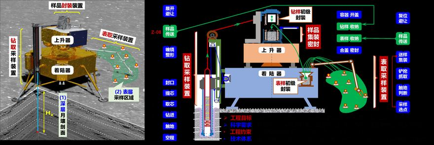
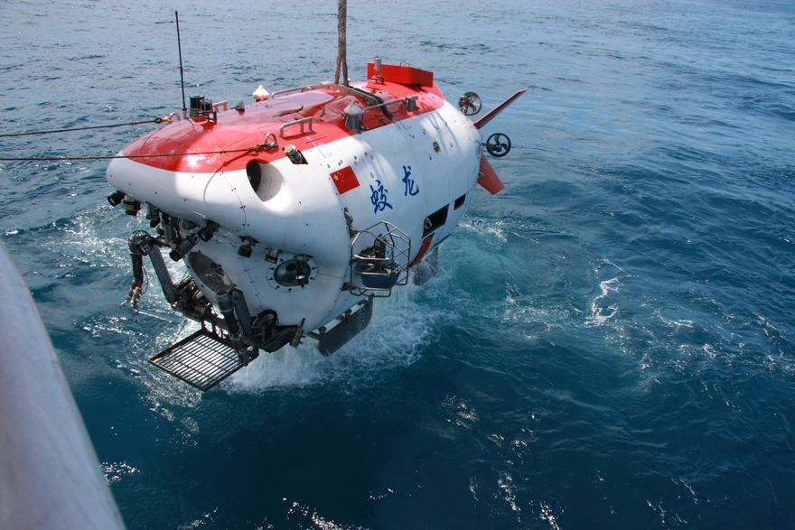
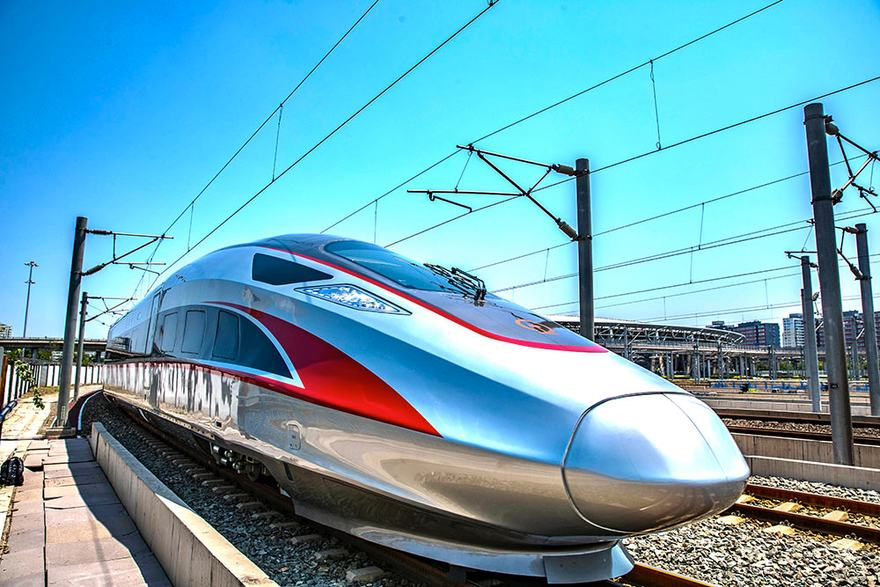
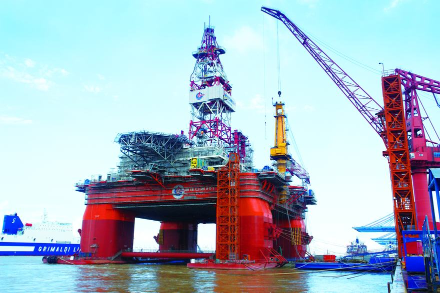
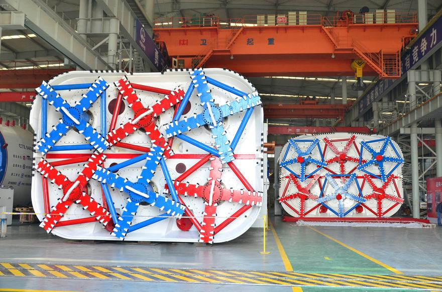
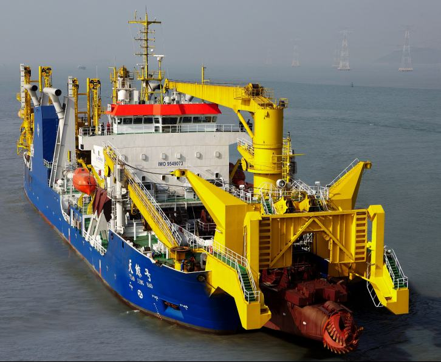
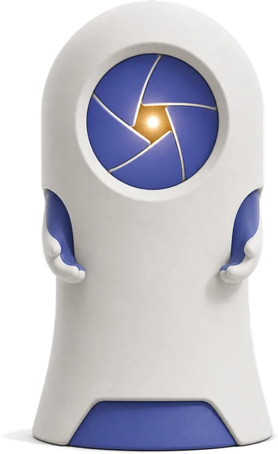

01
一个样板，看懂「技术迁移」
平台演示样板获奖案例不是只能被展示，也可以成为新产品的创新起点。迁移的关键一步是抽象——把具体场景里的技术，还原成可携带的原理，再应用到新问题里：
企业问题 · 小家电
破壁机内壁难清洗、噪音大
企业提出升级目标：让食物残渣不粘附、易冲洗，同时降低工作噪音。
案例匹配→
获奖技术 · 航空航天
仿生微纳结构防冰减阻蒙皮
获奖项目中的表面工程技术：用仿生微纳结构控制冰、水、气流在界面上的行为。
原理抽象→
迁移输出 · 新产品方案
仿生易洁低噪破壁机
「防冰」抽象为「界面控制」——同一原理控制食物残渣与噪音振动，形成可向企业汇报的产品方案。
※ 本链路为平台演示样板：展示「行业输入 → 案例匹配 → 原理迁移 → 方案输出」的工作方式。具体项目的技术细节与可迁移性，以获奖团队与专家校准为准。
02
产业服务菜单
按成熟度分级标注03
对接机制
1提出需求描述技术瓶颈或升级目标，越具体越好
2平台诊断助手初判 + 获奖案例匹配，形成迁移假设
3专家协同获奖团队 / 评审专家介入，校准迁移路径
4转化落地方案实施与成果跟踪，需求反哺知识库
可信原则：平台对所有迁移建议做两级标注——「已验证应用」（有真实落地依据）与「AI 推断」（有原理依据、待专家校准）。我们绝不把推断说成事实；进入具体转化时，由获奖团队与工程师补充深层技术细节并校对把关。
04
可迁移技术库 · 节选
全部见「设计与产业」展区这些金奖成果背后的方法——极端环境机构、密封耐压、低阻外形、系统集成——正是许多企业技术升级的同源问题。点任意一件，直接问助手它能迁移到什么。






05
提交你的技术问题
合作意向入口 · 已上线留下真实问题，平台出具迁移分析后与你联系；也可以先自助生成一份迁移分析报告看看思路，再决定是否深入对接。带 * 为必填。

带着你的问题，问「好设计助手」。
打开助手后切换到「企业」身份，需要深度分析时点亮「深度」开关。三个真实问题，现在就可以试：
线下空间：好设计馆 · 嘉善（2026 年底开放）｜ 合作洽谈请联系平台运营方